Stynero
AI & Digital Strategy Agency
Complete documentation for the Stynero HTML Template — everything you need to get started.
Thank you for purchasing Stynero. If you have any questions beyond this help file, feel free to email us
Quick Navigation
Installation 01
FTP Upload
- Connect: Open your FTP manager and connect to your hosting server.
- Navigate: Browse to the required directory (typically
public_html). - Upload: Upload all files from the Stynero folder to your server.
After upload, your site will be live at your domain. For local development, use a tool like XAMPP or MAMP.
Pages Included 02
All HTML Pages
Page Structure Preview
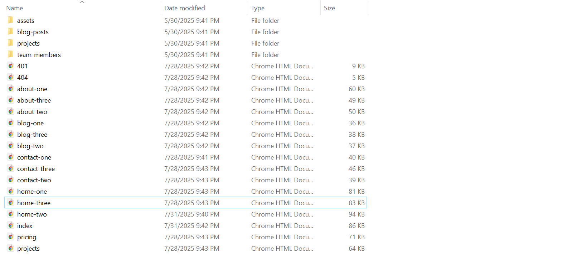
Fonts Used 03
Google Fonts
<!-- Google Fonts Import -->
@import url('https://fonts.googleapis.com/css2?family=Bebas+Neue&family=Poppins:wght@300;400;500;600;700;800;900&display=swap');
/* Usage in CSS */
h1, h2, h3, h4, h5, h6 {
font-family: 'Bebas Neue', sans-serif;
}
body, p, span, a, li, .nav, .btn {
font-family: 'Poppins', sans-serif;
}
Source File (CSS) 04
All Stylesheets
<!-- =========== All Stylesheets ================= --> <!-- Bootstrap CSS ============================================ --> <link rel="stylesheet" href="assets/css/bootstrap.min.css"> <!-- Swiper Slider CSS ============================================ --> <link rel="stylesheet" href="assets/css/swiper-bundle.min.css"> <!-- Bootstrap Icons ============================================ --> <link rel="stylesheet" href="assets/css/bootstrap-icons.css"> <!-- Main Style CSS ============================================ --> <link rel="stylesheet" href="assets/css/style.css"> <!-- Spacing Utilities ============================================ --> <link rel="stylesheet" href="assets/css/spacing.css"> <!-- Responsive CSS ============================================ --> <link rel="stylesheet" href="assets/css/responsive.css">
CSS File Details
Source File (JS) 05
All JavaScript Files
<!-- ============================================
1. THIRD-PARTY LIBRARIES (Vendor)
============================================ -->
<script src="assets/vendor/jquery.min.js"></script>
<script src="assets/vendor/bootstrap.bundle.min.js"></script>
<script src="assets/vendor/gsap.min.js"></script>
<script src="assets/vendor/ScrollTrigger.min.js"></script>
<script src="assets/vendor/swiper-bundle.min.js"></script>
<!-- ============================================
2. YOUR CUSTOM SCRIPTS
============================================ -->
<script src="assets/js/utilities.js"></script>
<script src="assets/js/pricing.js"></script>
<script src="assets/js/counter.js"></script>
<script src="assets/js/menu.js"></script>
<script src="assets/js/hamburger.js"></script>
<script src="assets/js/gsap-animations.js"></script>
<script src="assets/js/gsap-utilities.js"></script>
<script src="assets/js/slider-init.js"></script>
<script src="assets/js/parallax.js"></script>
<!-- ============================================
3. MAIN JS - ALWAYS LAST
============================================ -->
<script src="assets/js/main.js"></script>
JS File Details
Important: Always load main.js last to ensure all dependencies are loaded before initialization.
Customization 06
How to Change Logo
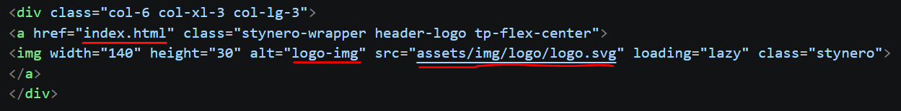
How to Change Title
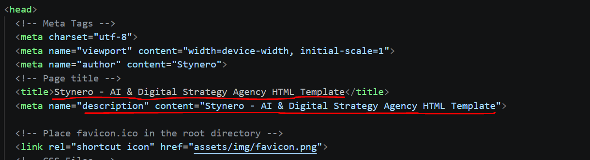
How to Change Favicon
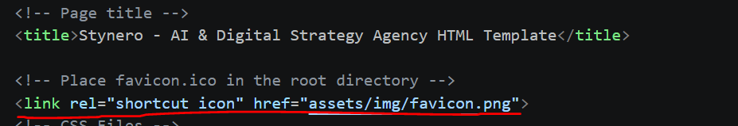
How to Change Preloader
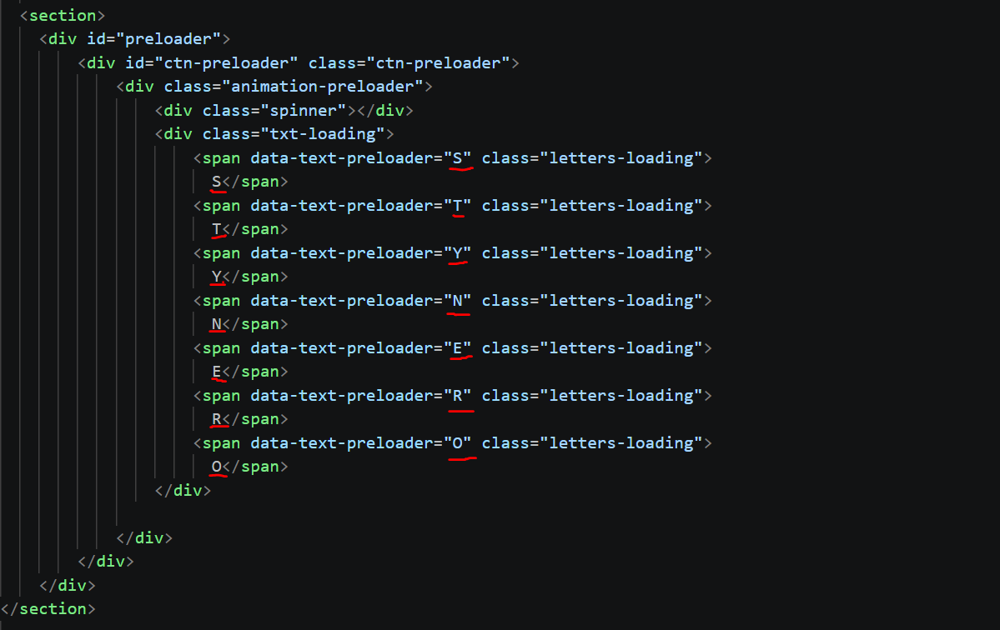
How to Change Page Banner
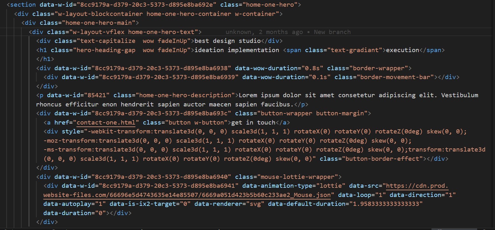
How to Change Section Title
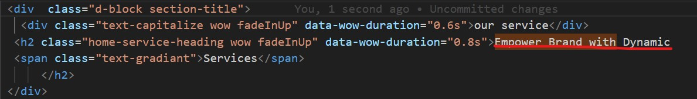
How to Change Services
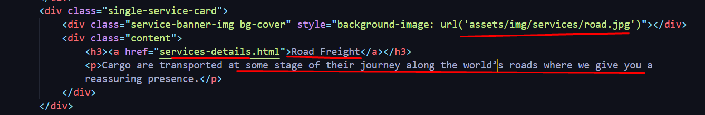
How to Change Single Team Member

How to Change Single Review
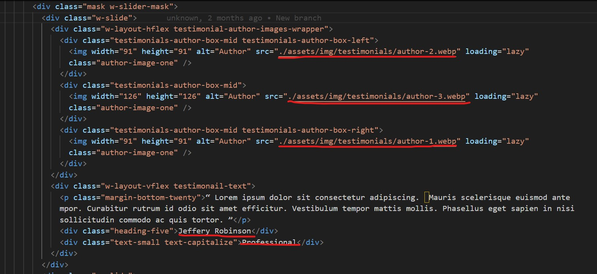
How to Change Single Fun Fact
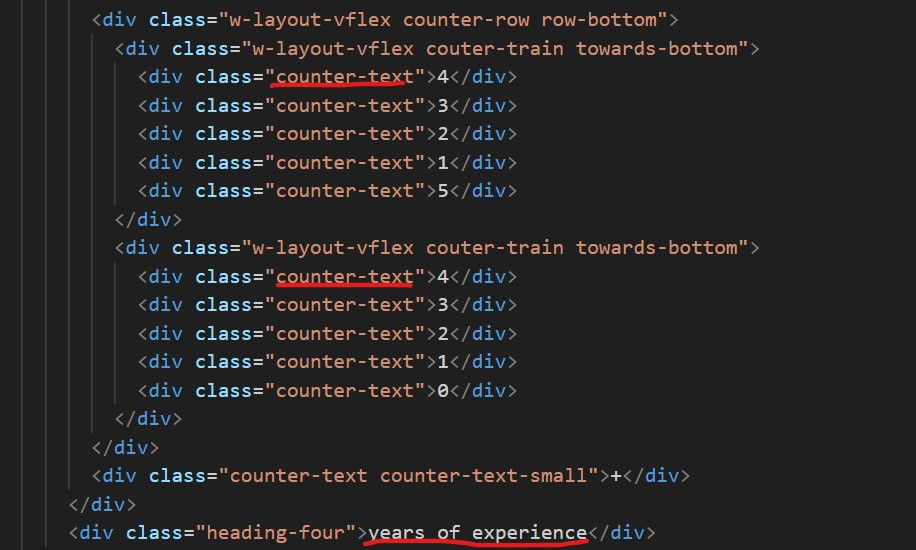
How to Change Single Price Item
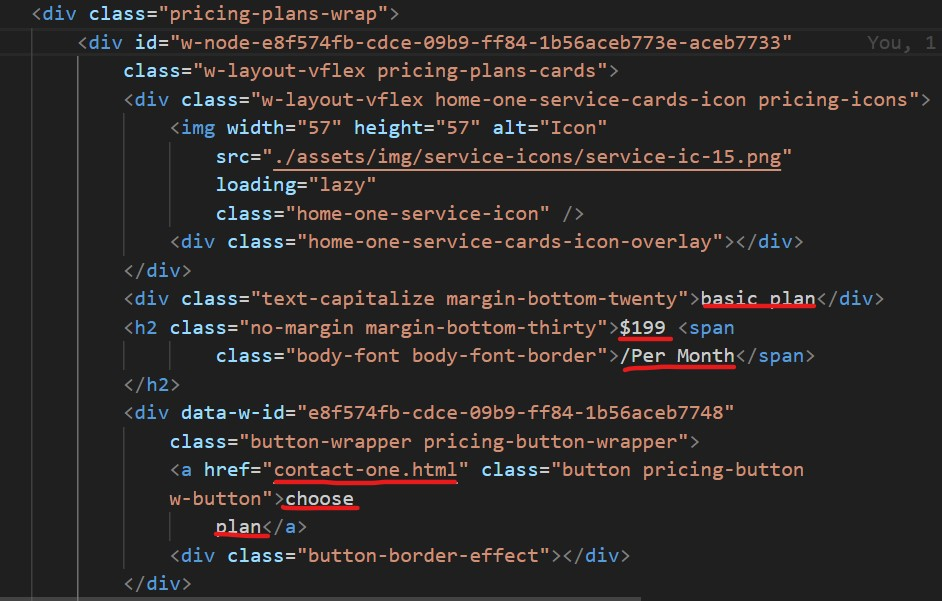
How to Change Single Skill Item

How to Change Social Links
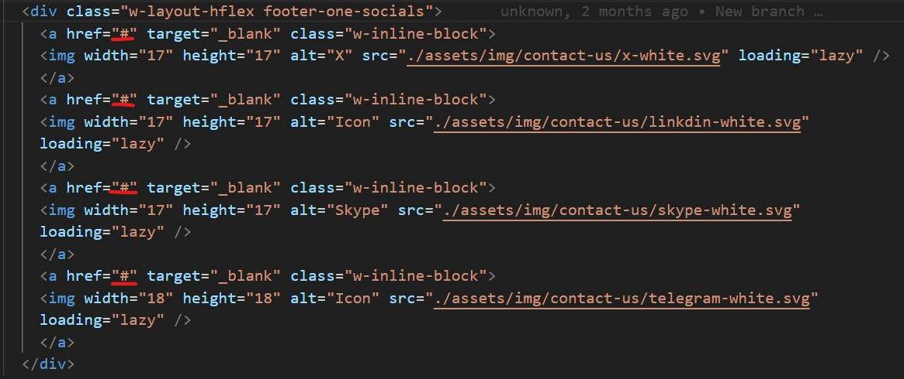
How to Change Copyright
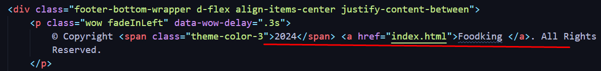
CSS Structure
All styles are organized in assets/css/style.css with clear sections:
================================= |*** Table of contents: ***| ================================= 1. General styles 2. Preloader 3. Header and navigation 4. Hero Section 5. About us 6. Service 7. Marquee 8. Counter animation 9. Our mission 10. Our strength 11. Tabs-menu 12. Awards 13. Form 14. Choose 15. Brand 16. Project 17. Price 18. Testimonial 19. Blog 20. Contact 21. Footer
To edit a specific section, find the corresponding label in the CSS file and modify the styles.
For SCSS users, edit the files in assets/scss/ and compile.
Hero Section (SCSS)
Located in assets/scss/_hero.scss
/* ----------------------------------
Hero Section - Styles
------------------------------------ */
.girl-image-wrapper {
position: absolute;
inset: 0% auto auto 0%;
}
.home-shape-background {
background-image: radial-gradient(circle at 77% 54%, #b460f126, #b460f100 25%),
url("../img/background/home-shape-bg.webp");
background-position: 0 0, 100% 47%;
background-repeat: repeat, no-repeat;
background-size: auto, 60%;
}
.home-one-hero {
padding-top: 120px;
}
.home-one-hero-text {
z-index: 10;
text-align: center;
max-width: 850px;
margin: 0 auto;
}
Credits & Sources 07
Tools & Libraries
Thanks 08
Once again, thank you for purchasing Stynero!
We hope you love using this template as much as we loved creating it.
If you're happy, please leave a 5-star rating on ThemeForest.
Best Regards
loki Theme
info@example.com | themeforest.net/user/modinatheme